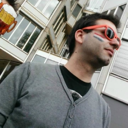

Team¶
Students¶
- Ana Rita Santiago, MEC: 72099, ana.rita.santiago@ua.pt

- António Ramos, MEC: 30928, antonio.pedro@ua.pt
- Filipe Macário, MEC: 64618, filipemacario@ua.pt
- Francisco Cunha, MEC: 76759, franciscomiguelcunha@ua.pt
- Raquel Ramos, MEC: 76538, raquel.oliveira.ramos@ua.pt
- Ricardo Silva, MEC: 68067, ferreiraricardo@ua.pt
Weekly Report¶
- Week 1
- Team meeting to define project’s objectives.
- Week 2
- Filling M1 documentation.
- Simulators’ code development.
- Week 3
- Team meeting.
- Start looking to PostgreSQL.
- Docker deployment.
- Changes in simulators for different divisions.
- RabbitMQ deployment and testing.
- Start looking at web applications.
- Week 4
- PostgreSQL implementation with Java and Python.
- Values in realtime coming directly from broker.
- Week 5
- Dashboard done and presented to user with Tomcat.
- Data processing (averages).
- Events on database and dashboard.
- Values in realtime from broker presented in tables of the dashboard.
- Previous values from database presented in charts showing variation over time.
- Xcoa website and documentation for M2.
- Week 6
- Team meeting.
- Week 7
- Improvement of dashboard: becoming more intuitive to the user.
- Data processing: search.
- Adding and testing RabbitMQ consumer in Java.
- Week 8
- Data processing: insert events.
- Getting broker ready for events.
- Improvement of dashboard.
- Week 9
- Fix PostgreSQL bugs.
- Changing RabbitMQ to Kafka.
- Deploying Kafka producer and consumer on project.
- Fix dashboard and UI for charts.
- Week 10
- Team meeting.
- Improvement of charts.
- Week 11
- Search on dashboard.
- Adding Kafka consumer in Java: fixed bugs.
- Calendar for user’s events on dashboard.
- Notifications/alarms for values of sensors.
- Week 12
- Team meeting.
- Actuators.
- Week 13
- Team meeting.
- Fix events on dashboard.
- Adding, deploying and testing Kakfa consumer calculating averages in Java.
- BDD tests.
- Week 14
- Notifications/alarms being showed on dashboard.
- Writing documentation.
- Week 15
- Team meeting.
- Fix issues on PostgreSQL: events.
- Jenkins.
- ELK.
- Writing documentation.
- Week 16
- Team meeting.
- Jenkins.
- ELK.
- Writing documentation.
- Week 17
- Finish writing documentation.
Team Work¶
Group’s timesheet: https://docs.google.com/spreadsheets/d/14GpPbtH0TMQ1nUEavEsI64Z0etfDdRXNMnr-SqUtCkA/edit?usp=sharing